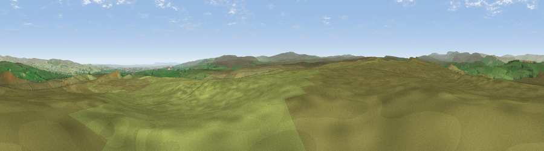

Viewpoint near Bowes
#11018 in England · top 26% of its area beats it · near BowesWhere it is
The exact computed spot (NY 95375 16575). Click the marker for map links.
The view, rendered

A 360° render of this exact spot computed from the terrain model, tree cover and land cover — summer colours, afternoon light, calibrated against photographs of famous viewpoints. Real trees, hedges and buildings will differ in detail.
The panorama
Grey silhouette: terrain skyline in each direction (720 bearings, Earth curvature and refraction included). Dashed green: skyline with trees (+15 m) and buildings (+8 m) as obstacles. Blue strip: how far the ground is visible on each bearing.
Where the view opens
Wedge length = distance to the farthest visible ground on that bearing (vegetation-aware). Rings at 10, 25 and 50 km.
What fills the view
96% grassland · 2% woodland · 1% cropland
Angular shares of the visible panorama (visual magnitude), not map area. Landscape diversity 0.09 (0–1 Shannon).
Key numbers
More beautiful places nearby
The staircase of upgrades: each row has a higher view potential than everything closer. Driving times are estimates from straight-line distance, calibrated against real road routing — check an actual route before setting out.
| Place | Direction | Drive | Score |
|---|---|---|---|
| Viewpoint near Bowes | W · 0 km | ~2 min | 63.3 |
| Viewpoint near Bowes | ENE · 1 km | ~2 min | 63.8 |
| Viewpoint c10394_7847 | NW · 4 km | ~10 min | 65.9 |
| Viewpoint near Mickleton | N · 5 km | ~11 min | 69.7 |
| Viewpoint near Middleton-in-Teesdale | NNW · 8 km | ~16 min | 70.2 |
| Viewpoint c10288_7742 | WSW · 9 km | ~17 min | 70.3 |
| Viewpoint near Eggleston | NE · 10 km | ~19 min | 76.0 |
| Viewpoint c10024_7603 | SW · 22 km | ~36 min | 76.9 |
54.54441, -2.07300 · source: screening · position refined by local search. Computed location — check access rights before visiting.